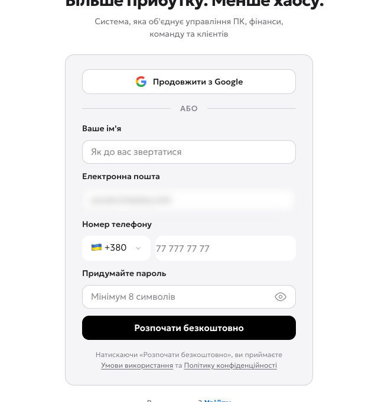
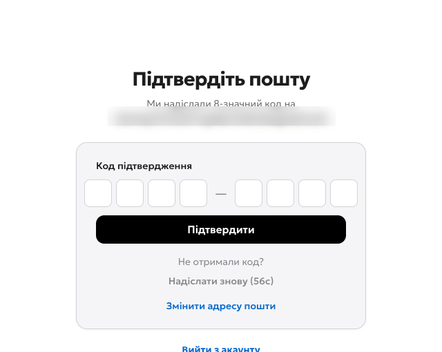
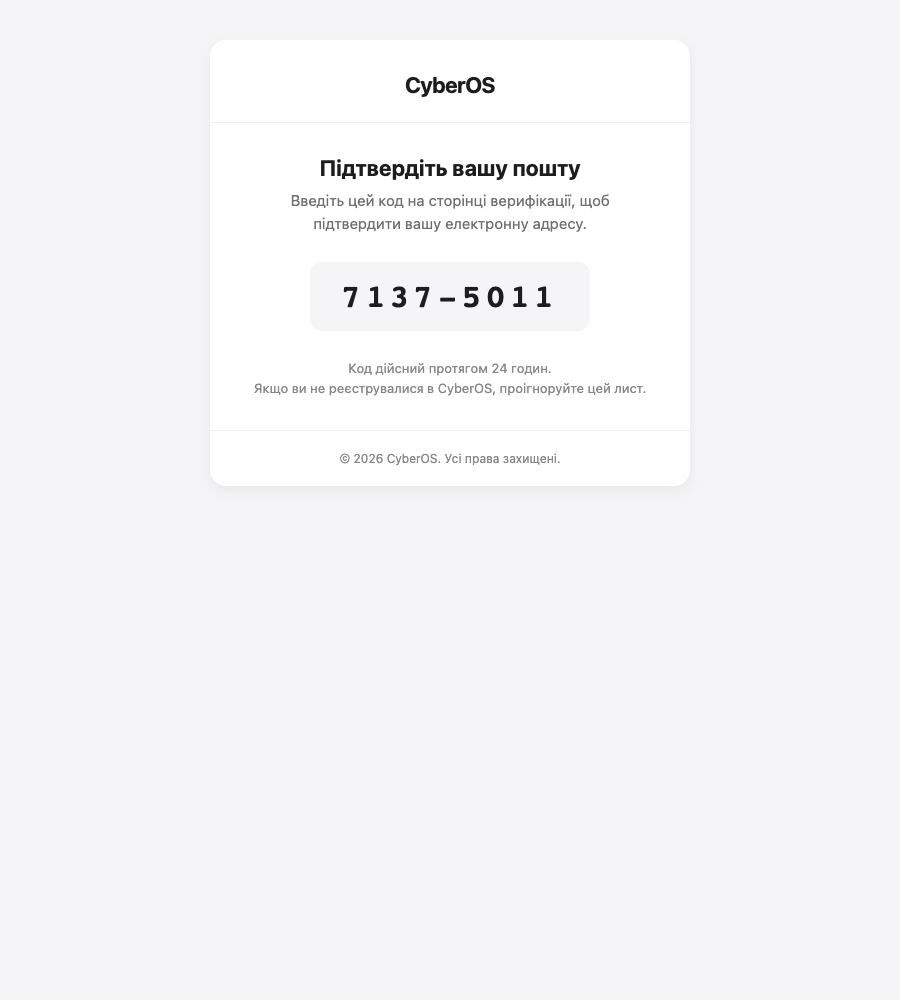
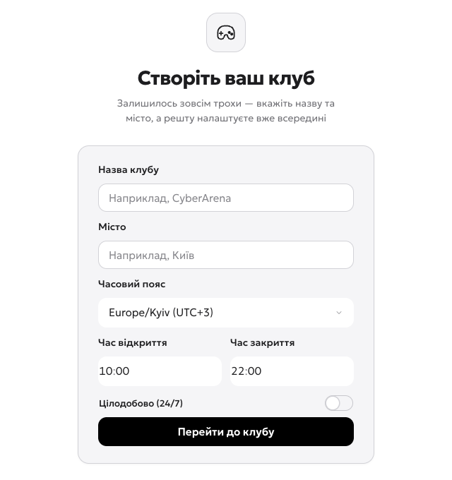

Створіть акаунт власника
Відкрийте сторінку реєстрації CyberOS — адресу панелі вам надасть постачальник системи. Пошта, яку ви тут вкажете, стане логіном власника: акаунта з повними правами, який потім запрошує адміністраторів і касирів.
- 1Ваше ім’я — так вас бачитимуть співробітники в логах і на змінах.
- 2Робоча пошта — це логін власника. На неї прийде код підтвердження, тож доступ до скриньки потрібен зараз.
- 3Телефон — 9 цифр після +380. Один номер = один акаунт, тому для другого власника потрібен інший.
- 4Пароль — мінімум 8 символів. Ним ви заходитимете в кабінет, тому збережіть його в менеджері паролів.
- 5Розпочати безкоштовно — створює акаунт власника.

Підтвердіть пошту кодом із листа
Система надсилає 8-значний код. Лист приходить за 10–20 секунд — але його часто кладе в «Спам», тому перевірте цю теку одразу, не чекаючи повторної відправки.
- 1Вісім полів коду — клікніть у перше і наберіть код повністю. Форма підтвердиться сама, кнопку тиснути не обов’язково.
- 2Підтвердити — знадобиться, якщо вставляєте код із буфера.
- 3Надіслати знову — активується після відліку. Тисніть, лише якщо листа немає й у «Спамі».
- 4Змінити адресу пошти — якщо помилилися в адресі; акаунт не доведеться створювати заново.


Назвіть клуб і задайте години роботи
Мінімум, без якого система не запуститься: назва, місто й режим роботи. Решту — зони, пристрої, тарифи — налаштуєте вже всередині кабінету.
- 1Назва клубу — її бачать гості в застосунку й на екранах Shell. Змінити можна потім у налаштуваннях.
- 2Місто — для звітів і мережі клубів.
- 3Часовий пояс — у ньому читаються години роботи, розписання тарифів і кожен час у панелі. Для України лишайте Europe/Kyiv.
- 4Час відкриття й закриття — вводиться по цифрах: клікніть у годину, наберіть, потім хвилини.
- 5Цілодобово (24/7) — увімкніть, якщо клуб не закривається. Тоді години сховаються, а тарифи доведеться покрити на всю добу.
- 6Перейти до клубу — створює клуб і відкриває кабінет.

Ви в кабінеті
Після «Перейти до клубу» система відкриває розділ «Співробітники та ролі» — не дашборд. Це нормально: у новому клубі ще немає ні пристроїв, ні продажів, тому першою корисною дією є команда.
Відео: увесь розділ за одну хвилину
Запис реального проходу — від порожньої форми реєстрації до кабінету. Підписи в кадрі повторюють кроки вище; звуку немає, тож дивитись можна без навушників.
Наступний розділ
Клуб створено, але він поки порожній. Далі — те, без чого не почати продавати час:
- Зони й пристрої — розбити зал на зони (Стандарт, VIP, PlayStation) і додати комп’ютери.
- Тарифи — погодинні на день і ніч, вихідні, абонементи. Тут же покриття доби для режиму 24/7.